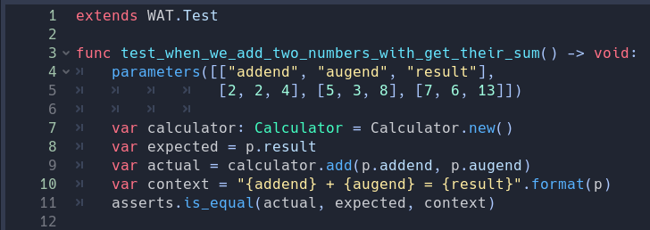
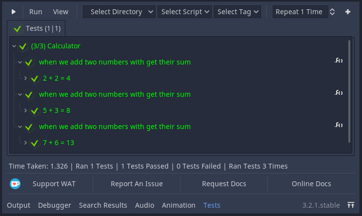
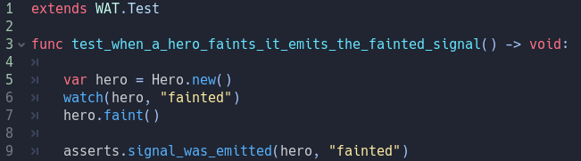

Utility Methods¶
# TODO Introduction
Parameterized Testing¶
You may find yourself repeating whole tests with the same structure where the only difference is the input data. You can solve this by using the parameters() within a single test method which takes an array of arrays.
The first nested array takes a collection of strings. These strings will be used as keys in our internal p (for parameters) object. The arrays after the first contain the values we are going to use each time we run the test. So in our first test we will use 2, 2, 4 where p.addend is 2, p.augend is 2 and p.result is 4. In our second test p.addend is 5, p.augend is 3, p.result is 8 and so on and so forth. This test will be repeated equal to the number of arrays (minus one for the first) inside the outer array.
Recording Properties¶
Sometimes values change during the course of the game; You’re hero may be taking poison damage that changes their health over time.
If you want to track a time sensitive change, you can use the record method.

The record method takes an object and an array of strings. These strings must be the name of a property on the object you passed in. It will return a Recorder Object that you can start and stop. Below we are recording the hero’s health after being poisoned for a second.

Note
[YIELD INFORMATION]
You can retrieve an Array of values by using the recorder.get_property_timeline(property: String) method where property is one of the Strings you passed in on the record method. In this case we’re getting the range of different health values our hero has had and then checking that their current health value is lower than our previous health value.
You can track multiple properties of one object from one Recorder Object but you cannot track multiple Objects from one Recorder. You will need to create a Recorder per object that you are tracking.
Simulate¶
[TODO]
Watching Signals¶
You can use the watch method to track what objects emit which signals:
You pass in the object you want to watch and which signal you want to track. You can use [signal assertion links goes here] to track more specific properties of the emitted signals (such as what parameters were passed in).
Yielding In Tests¶
until_timeout() until_signal() use in fixture Methods currying values through a return or emit_signal(s, 1, 2, 3, 4, 5, 6) etc null exceptions